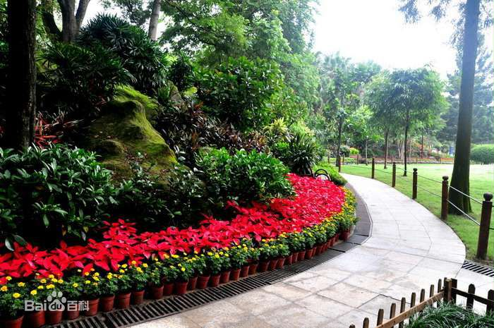
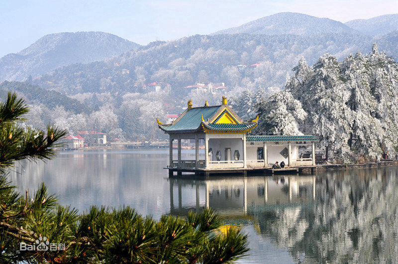
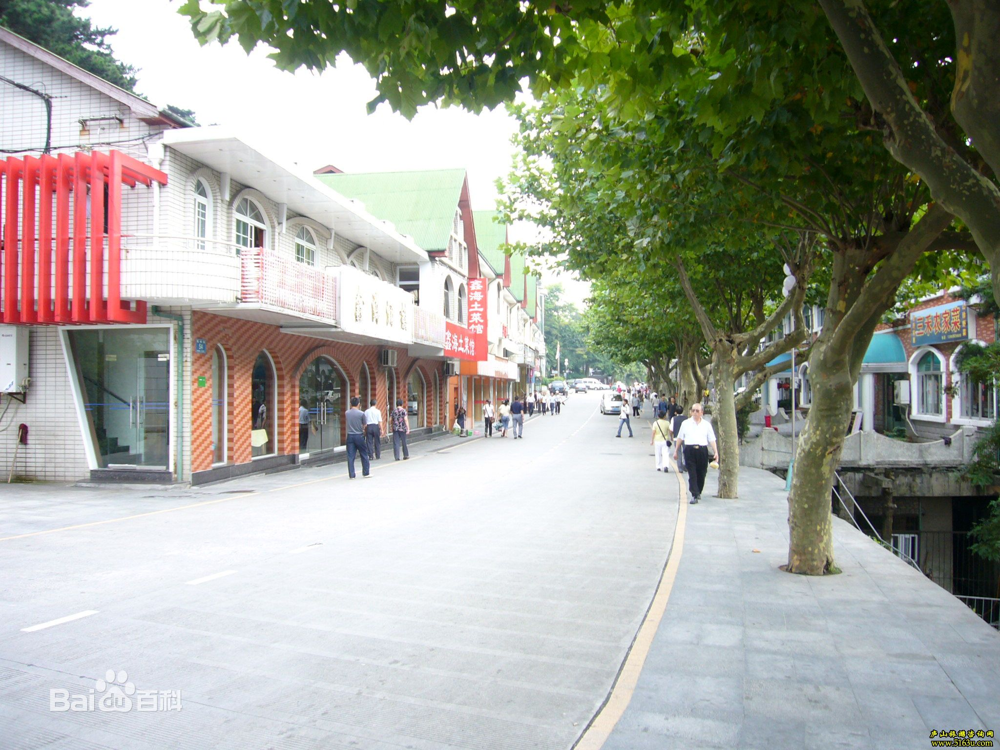
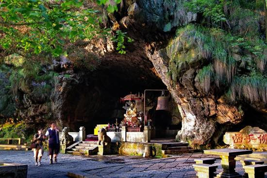
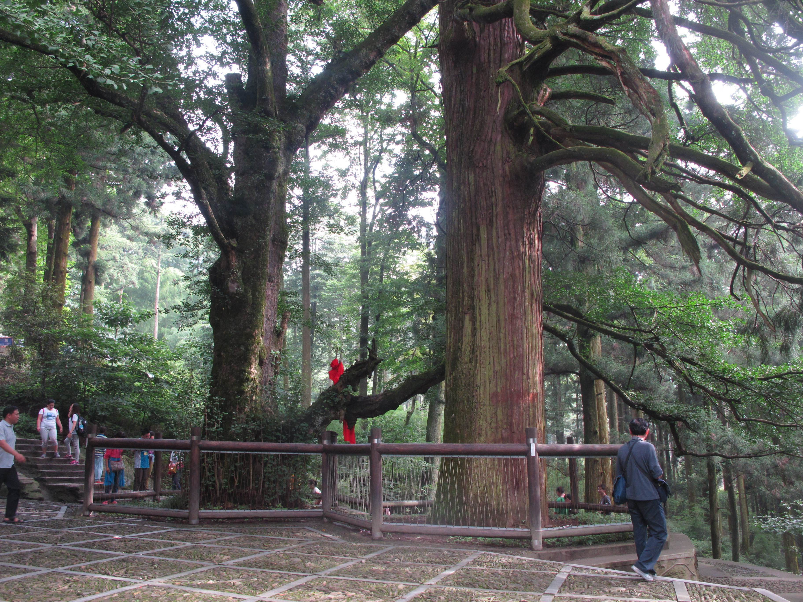
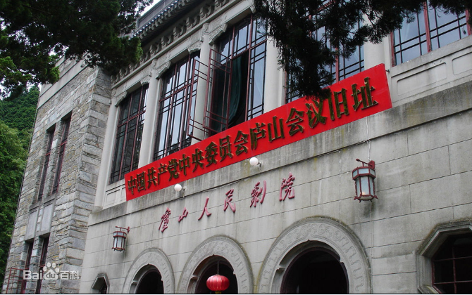
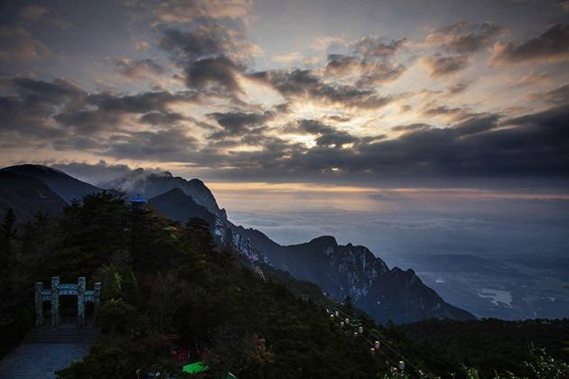
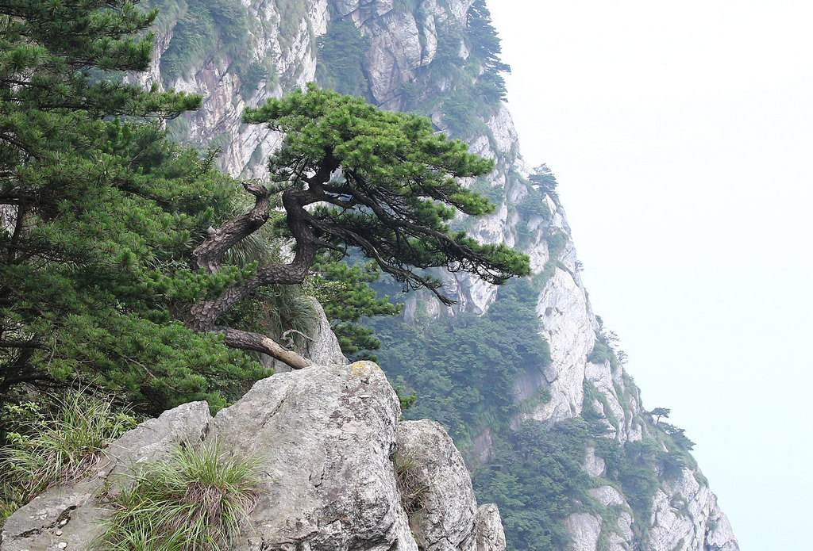

行程：
第一天：早上10点在九江火车站门口集合，乘大巴前往庐山；下午游览花径和如琴湖，在花丛中感受大自然的美好；晚上游览有120多年历史的庐山商业中心——牯岭街。
第二天：上午首先游览锦绣谷和仙人洞，体验仙境一般的感觉；接着游览黄龙寺和三宝树，享受古寺的悠闲自得；下午游览美庐别墅和庐山会议旧址，体会国家领袖挥斥方遒的气概。
第三天：早上游览含鄱口，看朝阳日出东方，以及长江和鄱阳湖的美景；接着游览庐山植物园，欣赏来自全世界的珍惜物种；下午游览五老峰，体验“一览众山小”的酣畅淋漓之感；然后乘大巴返回九江。
注意事项：
1. 本线路包含较多登山活动，请穿着合适的服装和运动鞋，不要穿高跟鞋、凉鞋等不舒适的鞋；
2. 夏季旅游，请注意防暑降温。
